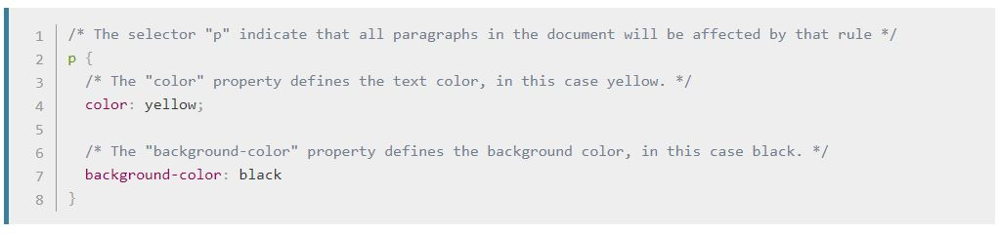

CSS
CSS(Cascading Style Sheets, 종속형 스타일 시트)는 브라우저에서 웹페이지의 외형을 결정하는 선언형 언어입니다.브라우저는 선택한 요소에 CSS 스타일 선언을 적용해 화면에 적절히 표현합니다. 하나의 스타일 선언은 속성과 그 값으로 이루어져 있습니다.
CSS는 HTML, JavaScript와 함께 웹의 3대 핵심 기술을 이룹니다. 보통 HTML 요소의 스타일을 결정하지만, SVG와 XML 등 다른 마크업 언어에도 사용할 수 있습니다.
하나의 CSS 규칙은 선택자에 연결된 속성 세트로 구성됩니다. HTML의 모든 문단을 검은색 배경에 노란색 글자색으로 만드는 예제를 확인해보세요.

copyright 2020, BSHand. All rights reserved.